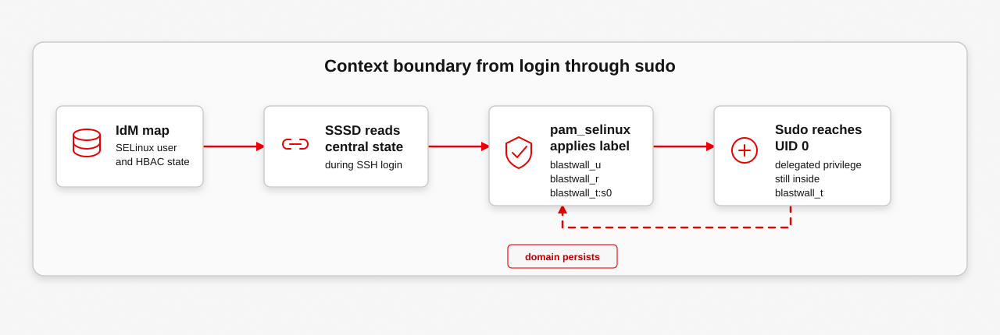
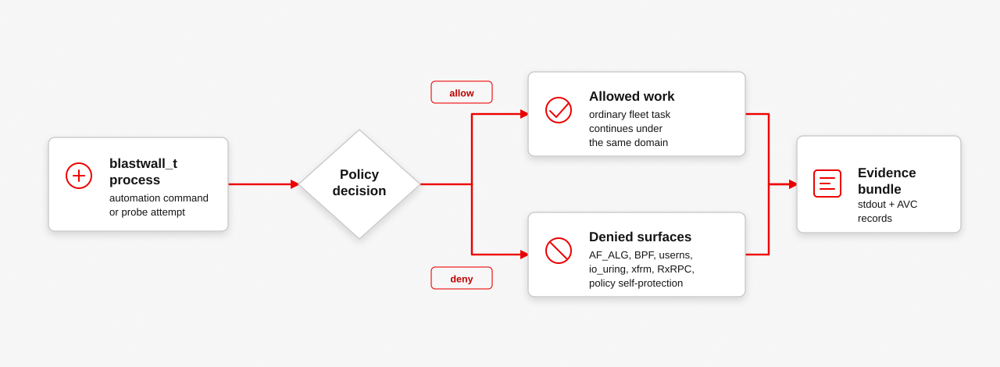

Red Hat Identity Management (IdM) decides which automation identity may arrive. SELinux decides what that identity can do after it lands. Blastwall's SELinux model is the job-site boundary in the same dispatch analogy used by the IdM model.
The short version: the automation identity logs in through the IdM-controlled path, receives the SELinux context blastwall_u:blastwall_r:blastwall_t:s0, can use sudo for delegated root work, and still remains inside blastwall_t when the deny scopes are enforced.
Why SELinux Matters
Ansible Automation Platform (AAP) and IdM can prevent bad launches, but they do not make the kernel denial. Once the job reaches the host, SELinux is the boundary that still applies when the automation process becomes UID 0 through sudo.
That distinction matters. Root is not the whole story on a SELinux-enforcing host. A root process still has a process label, and policy can deny dangerous access for that label.
Job-Site Analogy
The IdM model uses dispatched work to a controlled job site. SELinux is what happens at the job site after dispatch approves the trip.
| Analogy | SELinux Object | Blastwall Consequence |
|---|---|---|
| Badge | blastwall_u | The login receives an automation-specific SELinux user rather than an unconfined one. |
| Assigned role | blastwall_r | The session stays in the role intended for the automation path. |
| Work zone | blastwall_t | The process domain controls what the automation subject may touch. |
| Site rules | Policy allow and deny rules | The job can do permitted work while low-value exploit surfaces are denied. |
| Incident log | Audit and AVC records | Denied operations produce target-host evidence reviewers can inspect. |
The analogy should not hide the exact terms. Blastwall depends on the real SELinux context, policy modules, CIL deny rules, and audit evidence.
Context Shape
A process context has four visible parts:
blastwall_u:blastwall_r:blastwall_t:s0
user role type level| Part | Meaning | Blastwall Use |
|---|---|---|
blastwall_u | SELinux user component. | Identifies the login as the Blastwall automation SELinux user. |
blastwall_r | SELinux role component. | Constrains which process domains the session may enter. |
blastwall_t | SELinux type. For a process, this is also called the domain. | The policy target for the automation denials. |
s0 | SELinux level in this proof. | The proof uses the ordinary single-level shape for the mapped automation path. |
Login Path
The SELinux context does not appear by accident. IdM holds the SELinux user map, SSSD reads the identity and policy state during login, and pam_selinux applies the mapped login label.
blastwall_t.

SSH login as automation identity
-> SSSD reads IdM identity and access state
-> pam_selinux applies the mapped SELinux user
-> session starts as blastwall_u:blastwall_r:blastwall_t:s0If the map is missing or stale, the proof should fail before anyone treats the host as suitable.
Sudo Boundary
Sudo changes the effective privilege of the process. It does not automatically make the process unconfined. Blastwall checks the important property: after sudo reaches UID 0, the process is still in blastwall_t.
That is why the demo prints both UID and SELinux context. UID 0 proves delegated privilege. blastwall_t proves the host-local boundary still applies.
Deny Scopes
The current proof denies surfaces that have high exploit value and low expected value for privileged automation. The policy covers AF_ALG, BPF, packet_socket, user namespace creation, io_uring, xfrm, RxRPC, and direct policy self-protection.
| Scope | What The Probe Shows | Why It Matters |
|---|---|---|
| AF_ALG | Socket creation or Copy Fail authencesn path is unavailable to the confined subject. | This is the first concrete pressure test from copy.fail, and Fragnesia also uses AF_ALG as an AES helper. |
| BPF | BPF_MAP_CREATE and BPF_PROG_LOAD fail. | Privileged automation rarely needs to create kernel BPF objects during ordinary fleet work. |
| packet_socket | AF_PACKET socket creation fails. | Raw packet access is a powerful local capability and a poor default for automation. |
| userns | unshare(CLONE_NEWUSER) fails. | User namespaces often help exploit chains turn a local bug into a practical escalation path. Blastwall treats that as a posture decision: if this automation identity does not need user namespace creation, it should not have it while waiting for the next userns-adjacent CVE. |
| io_uring | io_uring_setup is blocked, or skipped on kernels without that SELinux object class. | It is a recurring kernel attack surface with little value for this automation identity path. |
| xfrm | NETLINK_XFRM socket creation fails. | Dirty Frag and Fragnesia both rely on attacker-controlled XFRM/ESP state before reaching ESP processing. Normal fleet automation should not need that control plane. |
| RxRPC | AF_RXRPC socket creation fails, or skips when the kernel has no RxRPC support. | Dirty Frag's RxRPC path needs an AF_RXRPC client. That protocol surface has little expected value for this automation identity. |
| policy self-protection | semodule remains denied from blastwall_t even when sudo can see it. | The confined identity should not remove the policy that confines it. |
Audit Evidence
Audit output is the host-local review trail. AAP and Ansible output tell the operator what the workflow saw; audit records show that the managed host enforced a policy decision for the confined subject.

The proof therefore reads both command output and target audit logs. Command output is easier to show. Audit evidence is harder to fake accidentally.
Failure Modes
| Failure | Operator Symptom | Likely Cause |
|---|---|---|
| Wrong context | id -Z does not show blastwall_u:blastwall_r:blastwall_t:s0. | Missing IdM SELinux user map, stale SSSD state, or login path not using the expected identity. |
| Sudo escapes the domain | UID becomes 0, but the process is no longer in blastwall_t. | Role/type transition mistake or overbroad local policy. |
| Probe is allowed | A probe prints success instead of BLOCKED. | Policy missing, wrong module version, compatibility gap, or the session is not confined. |
| No audit evidence | Command output says blocked, but audit search is empty. | Audit query mismatch, audit backlog, or denial happened before the expected audited path. |
| Self-protection fails | The automation identity can remove or modify deny modules. | Policy-management permissions were granted back to blastwall_t or sudo expansion bypassed the intended boundary. |
Where To See It
AAP Demo shows the Controller-facing verification output. Ansible Demo shows direct probes, audit evidence, and self-protection. Ansible Lab is the task-first replay for the non-AAP path.